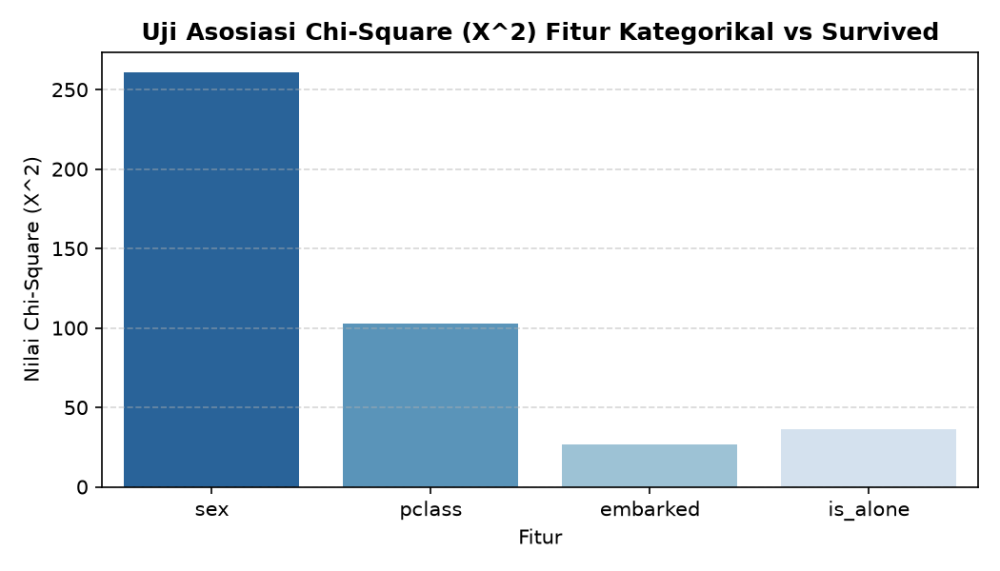
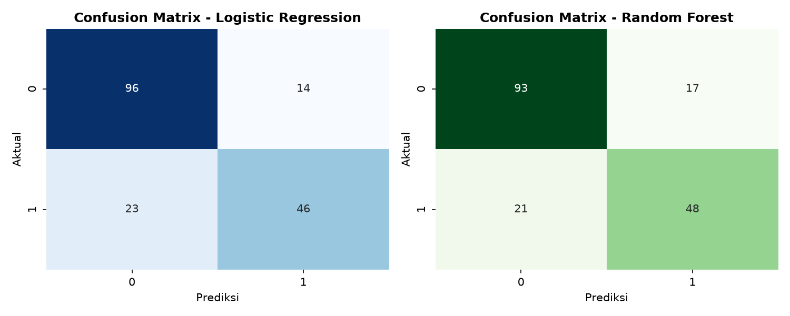

| Nama Mahasiswa | : | ANGGIT ARISA SIWI PRATAMA | Mata Kuliah | : | Machine Learning *) #) (KK43K780) |
| NPM | : | 202343570045 | Dosen | : | Nurfidah Dwitiyanti, M.Kom. |
| Kelas | : | XC Ekstensi | Tanggal Pelaksanaan | : | 02 Oktober 2026 |
Laporan ini mendokumentasikan penyelesaian Tugas Praktikum Bab 04 mengenai implementasi rekayasa fitur (feature engineering) dan konstruksi pipeline terintegrasi. Berdasarkan instruksi penugasan resmi (Modul 4 Halaman 24), dataset properti sintetik digantikan dengan dataset riil penumpang Titanic (N = 891). Karakteristik data ini meliputi keberadaan data hilang pada kolom age (19.87%) dan embarked (0.22%), serta tipe data campuran (kontinu, nominal, dan ordinal). Kami melakukan validasi statistik menggunakan Chi-Square (χ2), merekayasa tiga fitur turunan domain (family_size, is_alone, dan fare_per_person), serta membangun arsitektur ColumnTransformer scikit-learn. Model dievaluasi menggunakan pembagian data terstratifikasi 80:20 (Ntest = 179). Hasil evaluasi menunjukkan bahwa penambahan fitur hasil rekayasa pada model Logistic Regression meningkatkan akurasi dari 77.65% (F1 = 0.6970) menjadi 79.33% (F1 = 0.7132).
Tahap pra-pemrosesan data merupakan fase fundamental dalam siklus CRISP-DM (Data Preparation). Pada data mentah dunia nyata, pemberian data langsung ke algoritma tanpa standarisasi statistik menimbulkan tiga permasalahan kritis:
1. Kegagalan Eksekusi Numerik: Model klasifikasi standar (regresi logistik dan neural network) tidak dapat menerima nilai hilang (missing values) maupun variabel teks kategorikal secara langsung.
2. Dominasi Skala: Variabel berrentang lebar seperti fare (0 s.d. 512.33) mendominasi perhitungan bobot gradien terhadap variabel sempit seperti age (0.42 s.d. 80.0), sehingga menuntut standarisasi skor baku (z = (x − μ) / σ).
3. Kebocoran Data (Data Leakage): Terjadi bila statistik global (seperti median atau modus seluruh baris) dihitung sebelum pemisahan data latih (training set) dan data uji (test set). Untuk menjamin objektivitas generalisasi, seluruh transformasi wajib dienkapsulasi menggunakan objek ColumnTransformer di dalam Pipeline.
Sesuai materi seleksi fitur metode filter (Modul 4 Halaman 14–16), uji independensi Chi-Square digunakan untuk mengukur signifikansi korelasi antara variabel input kategorikal terhadap target keselamatan survived:
| Nama Fitur | Tipe Data | Derajat Bebas (df) | Nilai χ2 Hitung | Nilai p-value | Keputusan (α = 0.05) |
|---|---|---|---|---|---|
| sex | Kategorikal Nominal | 1 | 260.717 | 1.197 × 10−58 | Tolak H0 (Sangat Signifikan, Prediktor Utama) |
| pclass | Diskrit Ordinal | 2 | 102.889 | 4.549 × 10−23 | Tolak H0 (Sangat Signifikan) |
| embarked | Kategorikal Nominal | 2 | 26.489 | 1.770 × 10−6 | Tolak H0 (Signifikan) |
| is_alone (Rekayasa) | Biner Indikator | 1 | 36.002 | 1.972 × 10−9 | Tolak H0 (Signifikan, Validasi Fitur) |

Berdasarkan konteks penyelamatan pada kecelakaan Titanic, tiga fitur turunan baru dikonstruksi:
1. family_size (xkeluarga = sibsp + parch + 1):
Menggabungkan total anggota keluarga penumpang di kapal (saudara, pasangan, orang tua, anak) ditambah individu penumpang.
2. is_alone (Indikator family_size = 1):
Variabel indikator biner bernilai 1 jika penumpang bepergian sendiri, dan 0 jika memiliki rombongan keluarga.
3. fare_per_person (xtarif_individu = fare / family_size):
Membagi harga tiket rombongan dengan jumlah keluarga guna memperoleh daya beli riil per individu penumpang.
Proses transformasi data dibagi ke dalam tiga jalur terisolasi tanpa intervensi data uji:
age, fare, family_size, fare_per_person): Diimputasi menggunakan nilai median data latih (tahan pencilan), dilanjutkan standardisasi deviasi melalui StandardScaler().sex, embarked): Diimputasi dengan nilai modus (frekuensi terbanyak), dilanjutkan pengkodean biner menggunakan OneHotEncoder(drop='first', handle_unknown='ignore') guna menghindari multikolinearitas.pclass): Diimputasi dengan modus, lalu dipetakan secara hierarki numerik menggunakan OrdinalEncoder(categories=[[1, 2, 3]]).import seaborn as sns, pandas as pd
from sklearn.model_selection import train_test_split
from sklearn.compose import ColumnTransformer
from sklearn.pipeline import Pipeline
from sklearn.impute import SimpleImputer
from sklearn.preprocessing import StandardScaler, OneHotEncoder, OrdinalEncoder
from sklearn.linear_model import LogisticRegression
from sklearn.ensemble import RandomForestClassifier
from sklearn.metrics import accuracy_score, precision_score, recall_score, f1_score, confusion_matrix
# 1. Pemuatan & Rekayasa Fitur
df = sns.load_dataset('titanic')
df['family_size'] = df['sibsp'] + df['parch'] + 1
df['is_alone'] = (df['family_size'] == 1).astype(int)
df['fare_per_person'] = df['fare'] / df['family_size']
fitur_num = ['age', 'fare', 'family_size', 'fare_per_person']
fitur_cat = ['sex', 'embarked']
fitur_ord = ['pclass']
X = df[fitur_num + fitur_cat + fitur_ord]
y = df['survived']
# 2. Pembagian Data Terstratifikasi (80% Train, 20% Test)
X_train, X_test, y_train, y_test = train_test_split(X, y, test_size=0.20, stratify=y, random_state=42)
# 3. Pembangunan ColumnTransformer
preprocessor = ColumnTransformer(transformers=[
('num', Pipeline([('imp', SimpleImputer(strategy='median')), ('scaler', StandardScaler())]), fitur_num),
('cat', Pipeline([('imp', SimpleImputer(strategy='most_frequent')), ('ohe', OneHotEncoder(drop='first', handle_unknown='ignore'))]), fitur_cat),
('ord', Pipeline([('imp', SimpleImputer(strategy='most_frequent')), ('ord', OrdinalEncoder(categories=[[1, 2, 3]]))]), fitur_ord)
])
# 4. Pipeline Estimator
pipe_lr = Pipeline([('prep', preprocessor), ('model', LogisticRegression(max_iter=1000, random_state=42))])
pipe_rf = Pipeline([('prep', preprocessor), ('model', RandomForestClassifier(n_estimators=100, random_state=42))])
# 5. Pelatihan dan Evaluasi Bebas Leakage
pipe_lr.fit(X_train, y_train)
pipe_rf.fit(X_train, y_train)
pred_lr = pipe_lr.predict(X_test)
pred_rf = pipe_rf.predict(X_test)
| Model Eksperimen | Fitur Input | Akurasi | Presisi | Recall | F1-Score |
|---|---|---|---|---|---|
| 1. Baseline Logistic Regression | age, fare, sex, embarked |
77.65% | 73.02% | 66.67% | 0.6970 |
| 2. Enhanced Logistic Regression | Baseline + pclass, family_size, fare_per_person |
79.33% | 76.67% | 66.67% | 0.7132 |
| 3. Enhanced Random Forest | Baseline + pclass, family_size, fare_per_person |
78.77% | 73.85% | 69.57% | 0.7164 |

1. Efektivitas Konstruksi Fitur: Rekayasa fitur domain (family_size, fare_per_person, dan pclass) secara empiris menaikkan akurasi linier sebesar +1.68% dan skor F1 dari 0.6970 menjadi 0.7132.
2. Keunggulan Random Forest: Menghasilkan daya ingat (Recall) tertinggi (69.57%), membuktikan kemampuannya menangkap interaksi non-linier antara usia dan ukuran keluarga.
3. Pencegahan Kebocoran Data: Implementasi ColumnTransformer di dalam Pipeline memastikan bahwa seluruh parameter imputasi dan penskalaan hanya dihitung dari data latih, menjamin integritas validitas ilmiah pengujian.